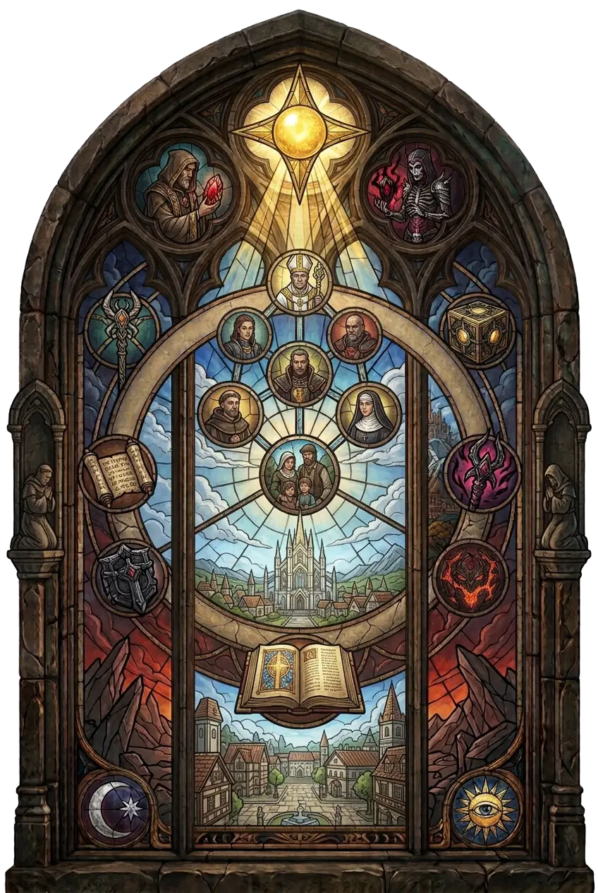

Glaubenssysteme, die Sanktuarios Geschichte geprägt haben: von der Kathedrale des Lichts bis zum Zakarum-Glauben.
Wo Sterbliche keine Antworten auf Engel und Dämonen finden, entstehen Glaubenssysteme – manche aus echter Hoffnung, andere als verdeckte Werkzeuge höherer Mächte. Dieses Register versammelt die bekannten Religionen und Lehren Sanktuarios.